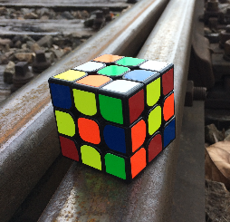

Rubik's Cube StoryRubik's Cube is a 3-D combination puzzle invented in 1974 by Hungarian sculptor and professor of architecture Ernő Rubik. Originally called the Magic Cube, the puzzle was licensed by Rubik to be sold by Ideal Toy Corp. in 1980 via businessman Tibor Laczi and Seven Towns founder Tom Kremer, and won the German Game of the Year special award for Best Puzzle that year. |
|
|  | As of January 2009, 350 million cubes had been sold worldwide making it the world's top-selling puzzle game. It is widely considered to be the world's best-selling toy. |
Learn to solve the
Rubiks cube
By Fabian and Joel